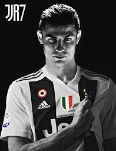

Career Stats
2001-07
During his internationalyouth career, Ronaldo represented the under-15,under-17,under-20, and under-23 national side, amassing 34 youth caps and scoring 18 goals overall.
2007-12
After his 22nd bithday, Ronaldo captained Portugal for the first time in a friendly match against Brazil on 6 February 2007.
2012-16
During the qualification for the 2014 World Cup, Ronaldo scored a total of Eight goals.
2016-18
Following the Euro 2016 success, Ronaldo played his first professional match on his home island of Maderia on 28 March 2017, he tied with Miroslav Klose on 71 goals as the third highest scoring Europian in International football.
2018-2020
Ronaldo played for hosts Portugal in the Nations League Final in June 2019 and this was only possible because of the hatrick scored by him against Switzerland in semi-finals
2020
On 8 September 2020, Ronaldo scored his 100th and 101st international goals in a 2-0 away win over Sweden in 2020-21 UEFA Nations League
2021
Ronaldo scored twice in Portugal's first game of Euro 2020, this made him all-time top goalscorer in the Competition's History.
17 June 2010
Ronaldo first became father to a son, Christiano Jr., born on 17 June 2010 in the U.S.
8 June 2017
Ronaldo then became father to twins, daughter Eva and son Meto, born on 8 June 2017 in U.S.
12 Nov 2017
He then became father to daughter Alana
2009-13
In 2009 Ronaldo joined Real Madrid for a world record transfer fee at the time, of $80 million.
2013-15
Ronaldo won Consecutive FIFA Ballon d'Or and La Decima which was his career best
2013-14
Ronaldo scored a record 17 UEFA Champions League goals during the 2013-14 season
2015-17
From 2015 to 2017 it was the golden time for ronaldo and he went on to became all time Real Madrid top scorer and La Undecima
2017-18
During this time Real Madrid won Champions League title for 5th time as well as he won his 5th Ballon d'Or
2018-19
On 10 July 2018, Ronaldo signed a contract with Juventus and since then he is playing for it
| Greatest of All Times  | |
|---|---|
| Born | Christiano Ronaldo February 05, 1985 Funchal, Portugal |
| Career Start |
Started playing in the year 1992 first football club to give chance was Andorinha |
| Spouse | Georgina Rodriguez They have a daughter named Alana Martina |
| Parents |
Joes Ronaldo Dolores Ronaldo |
| Children | with Unknown; Cristiano Jr. (b. 2010) from surogacy; Meto Ronaldo (b. 2017) Eva Ronaldo (b. 2017) |
| Career best |
134 UEFA goals and 42 assists |